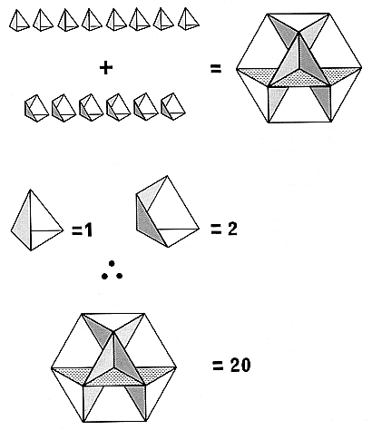

Fig. 222.30
Volume Of Vector Equilibrium:
The volume of the vector equilibrium consists of eight tetrahedra and six half-octahedra. Therefore, the volume of the vector equilibrium is exactly twenty.
Copyright © 1997 Estate of R. Buckminster Fuller